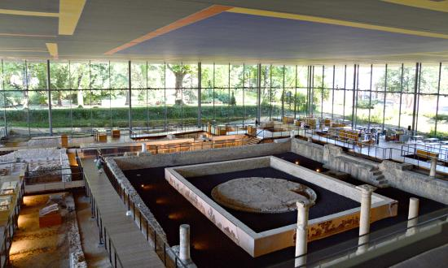

Les Musées à visiter
Notre patrimoine coup de coeur...

Vesunna Gallo-Roman Museum
Situé à Perigueux, préfecture de la Dordogne, le musée Vesuna est un musée archéologique construit sur des vestiges de l’ancienne ville romaine Vesuna, protégée en tant que monument historique. L’exposition met en avant la ville disparue à travers différentes mosaiques, des maquettes représentant le temple et l’amphithéâtre actuellement détruits, ainsi que des statues religieuses, des stèles ou des restes de colonnes.
D'autres musées qui pourraient vous intéresser...